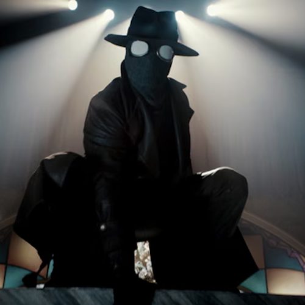
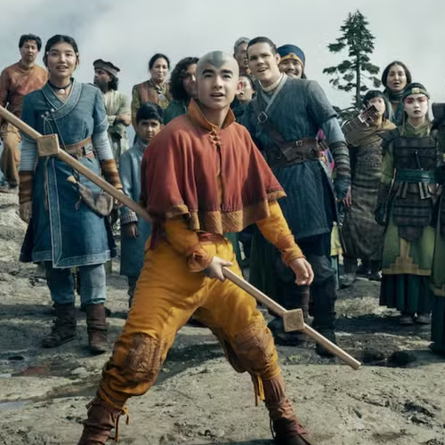
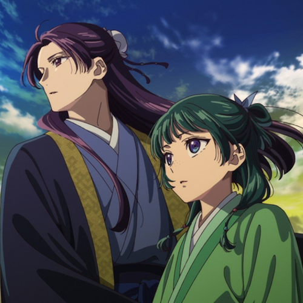

Assistimos Juntos

Spider Noir
Nossa primeira série juntos. Vimos o Miranha e o Mireia brigando

Avatar 2º Temporada
Foi bem divertido, começamos a usar câmera em alguns dias

Apotecária 1º e 2º Temporada
Foi bem tranquilo e divertido. Na expectativa pra próxima temporada